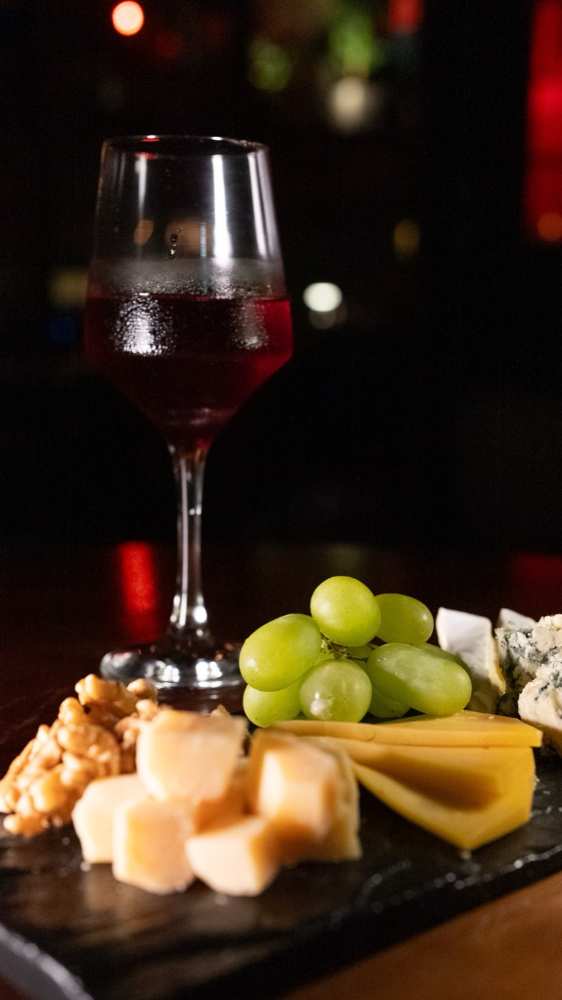
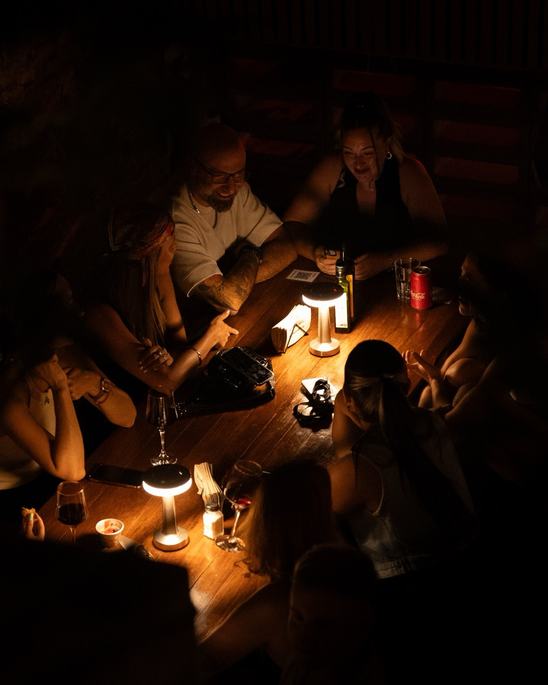

Palermo Wine Club · Gorriti 5646
Vino de bodegas argentinas, copa por copa. Para probar sin comprometerte con la botella entera.
En la carta
Armamos degustaciones para recorrer varias copas de una sentada. Están en la carta, sin fecha ni entrada: te sentás y las pedís.
Ver la carta

Vinora · @vinora.club
En cada edición, un invitado distinto: una bodega, una sommelier, un proyecto de vino o un estudio de arte. Los vinos, la propuesta de la cocina y el formato cambian cada vez.
Algunas de las ediciones que pasaron: